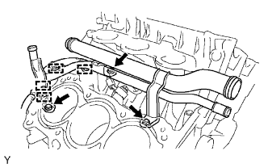
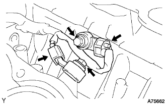

KNOCK SENSOR > REMOVAL |
| 1. DISCONNECT CABLE FROM NEGATIVE BATTERY TERMINAL |
| 2. REMOVE ENGINE ASSEMBLY |
Remove the engine (Click here).
| 3. REMOVE CYLINDER HEAD SUB-ASSEMBLY RH (for Bank 1) |
Remove the cylinder head RH (Click here).
| 4. REMOVE NO. 1 WATER OUTLET PIPE |
 |
Disconnect the 4 wire harness clamps.
for 3 Bolts Type
Remove the 3 bolts and water outlet pipe.
for 2 Nuts and Bolt Type
Remove the 2 nuts, bolt and water outlet pipe.
| 5. REMOVE KNOCK SENSOR |
 |
Disconnect the 2 sensor connectors.
Remove the 2 bolts and 2 sensors.